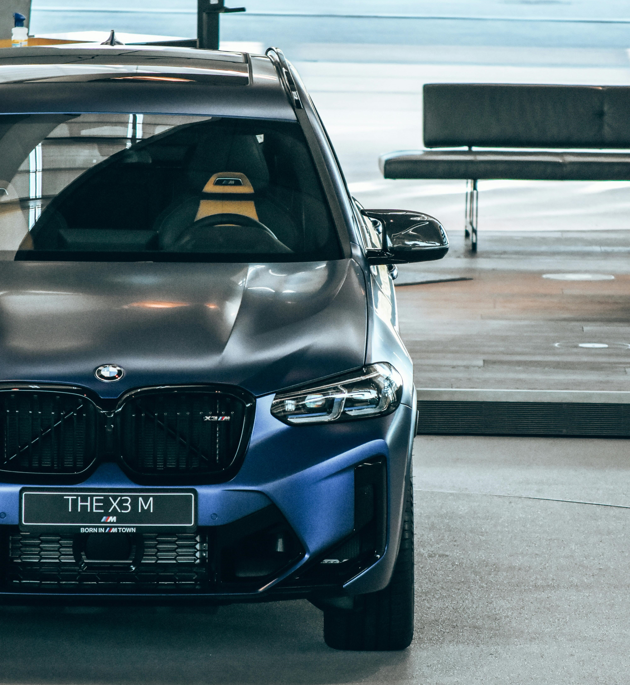
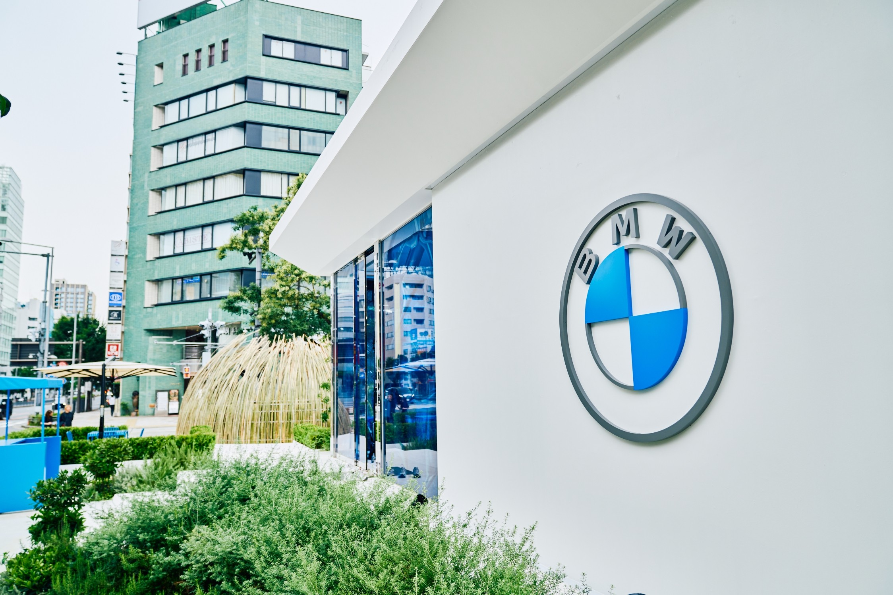

A BST AUTÓ KFT.-t három magánszemély alapította 2004 tavaszán. Az alapítók 1995-től a nyíregyházi SOLEXIS KFT. Hivatalos BMW márkaképviselet dolgozói voltak.
1999-ben, 2000-ben és 2001-ben munkatársaink képviselték Magyarországot a BMW GROUP COMPANY által szervezett szakmai világversenyen.
A BST AUTÓ KFT. folytatta azoknak az ügyfeleknek a megszokott magas színvonalú kiszolgálását, akik bizalommal voltak az időközben megszüntetett nyíregyházi márkaképviselet szakembereihez.
Az eltelt időszakban ügyfeleink száma jelentősen megnőtt és kialakult a törzsügyfeleink köre amely kiterjed a környező megyékre sőt a környező országokra is. Rendszeresen visszajáró ügyfeleink vannak több szomszédos, vagy akár még távolabbi országból, például Svájcból, Szlovákiából, Romániából, Ukrajnából, és sok más Magyar megyéből is.
Az ügyfeleink mind teljesebb kiszolgálása érdekében folyamatosan fejlesztjük eszközeinket és szolgáltatásainkat.

BMW GROUP COMPANY és BMW MAGYARORSZÁG KFT. (Alkatrész szállítás)
LINARTECH GROUP KFT, Szeged (Új és használt, BMW-k értékesítése, Gyári alkatrész szállítás)
UNIX Autó KFT., Bárdi Autó Zrt., Inter Cars Hungaria Kft., Láng Kereskedelmi Kft., Viola Centrum Kft., Szakál-Met-Al Zrt. (Egyéb típusok alkatrészei és utángyártott alkatrészek)
Carlux Autókozmetika (Autókozmetikai szolgáltatások)
HYDREX KFT. (Szerszámok és egyéb kiegészítők)
Igen, minden esetben időpontot kell foglalni előzetesen, amelyet telefonon tud megtenni. Erre azért van szükség, hogy ügyfeleinknek a lehető legkevesebb ideig kelljen nélkülöznie járműveit.
Igen, dolgozunk hozott anyagból is, amennyiben az ügyfél ragaszkodik hozzá, ugyanakkor ebben az esetben a jótállást és garanciát sem jogilag, sem szakmailag nem tudunk vállalni a beépített anyagokért.
Igen, bizonyos javítási munkákhoz előzetes állapotfelmérés szükséges, hogy pontos árajánlatot tudjunk adni, és az alkatrészigényt is be tudjuk határolni, valamint hogy a később kialakuló hibákat megfékezzük. Ez különösen fontos nagyobb javítások vagy bizonytalan hibák esetén. Az állapotfelmérés időpontját kérjük, előre egyeztesse velünk telefonon.
Az olajcsere gyakorisága függ az autó típusától, használati körülményektől, a motor típusától, továbbá az olaj minőségétől. A gyári olajcsere periódus rövidítése a motor élettartamát jelentősen megnöveli. Általánosan elmondható, hogy évente egyszer vagy 8–12.000 km-enként javasolt elvégezni az olajcserét.
Igen, van lehetőség ennek lebonyolítására is, így ezt a terhet is levesszük az ügyfél válláról.
Igen, rendelkezünk gyári és professzionális diagnosztikai eszközökkel, melyekkel a BMW és egyéb modellek teljes rendszere átvizsgálható. Hibakódok kiolvasására és törlésére is van lehetőség, azonban a hibák tényleges, vissza nem térő törlésére csak a hibák feltárása és javítása után van lehetőség.
A beszerelt gyári alkatrészekre 12 hónap garanciát vállalunk. Garanciális igényt csak a garanciális feltételek betartása mellett lehet érvényesíteni, amelynek feltételeiről tájékozódhat a weboldalunkon. Továbbá az alkatrész gyártója és forgalmazója eltérő garanciális időszakokat is megállapíthat, melynek függvényében az árazás is eltérő lehet.